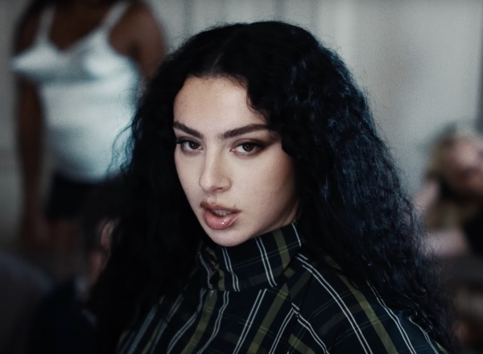

 Charlotte Emma Aitchison (Cambridge, 2 de agosto de 1992), mais conhecida pelo seu nome artístico Charli xcx — e até 2024, por Charli XCX, com maiúsculas —, é uma cantora, DJ, compositora, diretora e It girl britânica. Aos 14 anos de idade, Charli começou a gravar seu álbum de estreia. Deste, dois singles foram lançados sob a Orgy Music no final de 2008: "!Franchesckaar!" e o Lado A duplo "Emelline"/"Art Bitch". O disco, 14 - que continha a primeira composição citada - nunca foi comercialmente distribuído, embora tenham sido impressas várias cópias promocionais. Cinco anos mais tarde, foi lançado seu primeiro disco de estúdio oficial, True Romance, através das Asylum, Atlantic, IAMSOUND. Como cantora, Charli já alcançou o n.º 1 da parada de singles do Reino Unido, a primeira vez como artista participante, em "I Love It" — da dupla sueca Icona Pop — , em 2013, e a segunda como artista principal no single "Guess" - que conta com a participação da americana Billie Eilish -, em 2024.[5]Em 2014, foi lançado o single "Fancy", de Iggy Azalea, cujo refrão e ponte são cantados por xcx. A canção tornou-se um dos maiores êxitos de 2014, permanecendo no topo da Billboard Hot 100 durante sete semanas consecutivas.